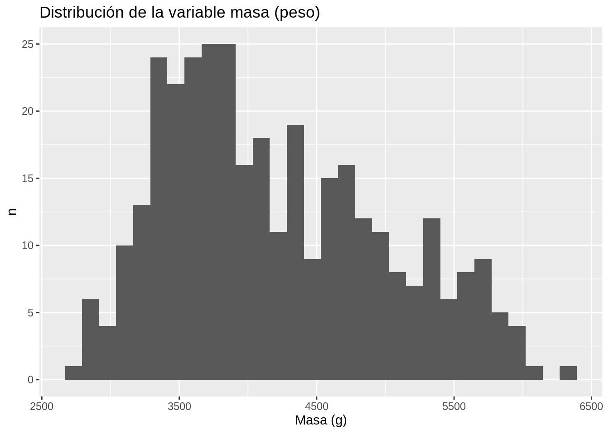
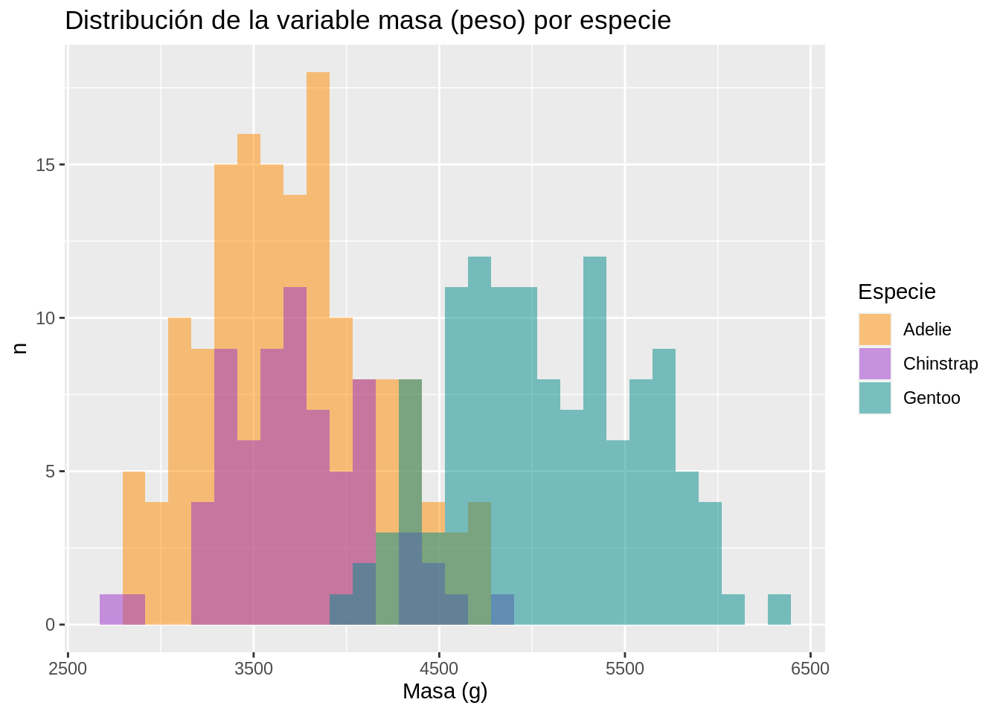
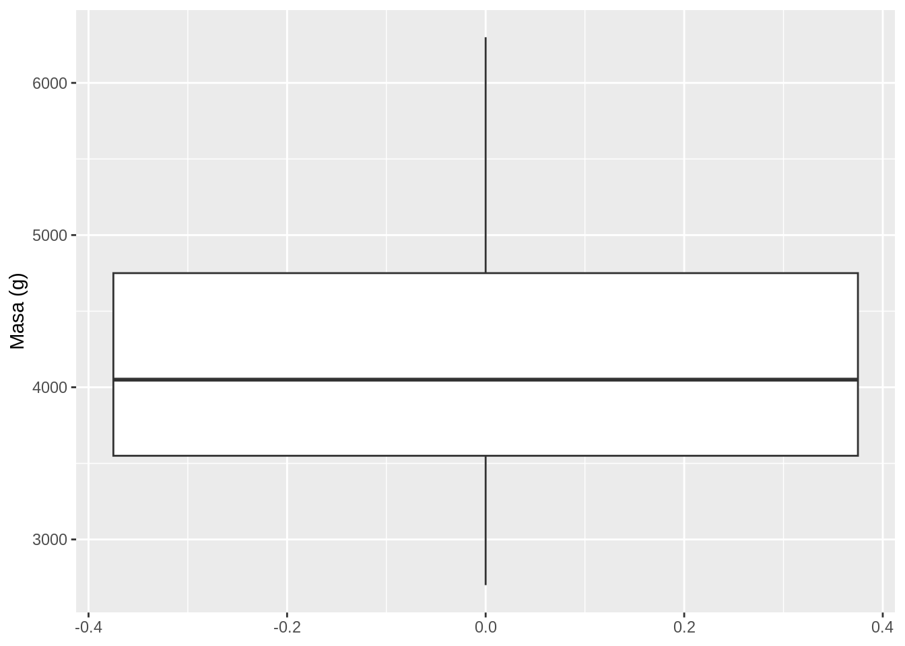
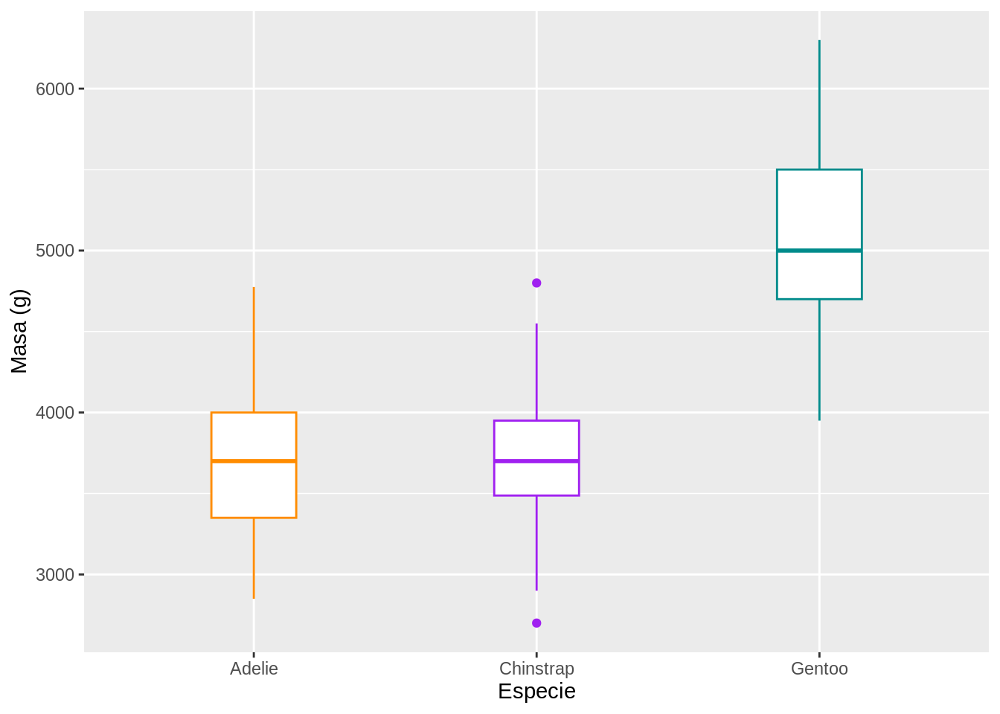

9 Tidyverse - colección de paquetes para ciencia de datos
9.1 Resumen
Tidyverse es una colección de paquetes de R orientados a ciencia de datos y que apoya los procesos de importación, organización, transformación, visualización, modelado y comunicación.
Los paquetes de Tidyverse trabajan con datos tidy (i.e. ordenados, organizados), los cuales deben cumplir con tres características:
- Cada variable debe tener su propia columna.
- Cada observación debe tener su propia fila.
- Cada valor debe tener su propia celda.
Las funciones de Tidyverse pueden encadenarse a través del operador pipe (tubo), ya sea el del paquete magrittr (%>%) o el del paquete base de R (|>). Los procesos se enlazan con pipes para formar pipelines (tuberías). En este contexto, un pipeline consiste de una cadena de procesos conectados de forma tal que la salida de cada proceso de la cadena es la entrada del próximo. Esto permite la comunicación y sincronización entre los procesos y evita la anidación de funciones.
9.2 Trabajo previo
9.2.1 Lecturas
Wickham, H., & Grolemund, G. (2017). R for Data Science: Import, Tidy, Transform, Visualize, and Model Data (1st ed.). O’Reilly Media. https://r4ds.had.co.nz/
Wickham, H., & Grolemund, G. (s. f.). R para Ciencia de Datos (1era ed.). Recuperado 14 de mayo de 2022, de https://es.r4ds.hadley.nz/
Wickham, H., Çetinkaya-Rundel, M., & Grolemund, G. (s. f.). R for Data Science (2nd ed.). Recuperado 16 de octubre de 2022, de https://r4ds.hadley.nz/
9.3 Introducción
Tidyverse es una colección de paquetes de R enfocados en ciencia de datos, una discipina que permite convertir datos no procesados en entendimiento, comprensión y conocimiento.
La Figura 9.1 ilustra el modelo de un proyecto típico de ciencia de datos, el cual incluye los procesos de importar, ordenar, transformar, visualizar, modelar y comunicar. Todos se articulan mediante programación de computadoras.
Importar los datos típicamente implica leerlos de un archivo, una base de datos o una interfaz de programación de aplicaciones (API) y cargarlos en un data frame.
Ordenar u organizar (to tidy) los datos significa colocarlos en estructuras rectangulares de filas y columnas, similares a tablas, de manera que cada fila sea una observación y cada columna una variable.
Transformar los datos implica la generación de algún subconjunto de filas y columnas, la creación de nuevas variables o el cálculo de estadísticas (ej. conteos, promedios, mínimos, máximos).
Visualizar los datos (en tablas, gráficos, mapas, etc.) permite encontrar patrones inesperados o formular nuevas preguntas.
Modelar es crear una representación abstracta y estructurada de los datos, con el fin de facilitar su análisis y realizar predicciones.
Comunicar es el último paso y es una actividad crítica de cualquier proyecto de análisis de datos o de ciencia en general.
Los paquetes de Tidyverse comparten filosofía de diseño, gramática y estructuras de datos para apoyar estos procesos del modelo de ciencia de datos. El concepto de Tidyverse fue introducido por Hadley Wickham, quien también ha programado varios de sus paquetes.
9.4 Paquetes
El núcleo de Tidyverse está compuesto por ocho paquetes base, los cuales proveen las funcionalidades utilizadas más frecuentemente en análisis de datos:
- dplyr: gramática que proporciona un conjunto consistente de “verbos” que resuelven los retos más comunes de transformación de datos.
- ggplot2: sistema para la creación declarativa de gráficos, basado en el libro The Grammar of Graphics, de Wilkinson et al..
- tidyr: conjunto de funciones para organizar (to tidy) datos, colocando las observaciones, variables y valores en filas, columnas y celdas de estructuras rectangulares.
- readr: conjunto de funciones para cargar datos de estructuras rectangulares (ej. archivos CSV) en memoria.
- purr: conjunto de herramientas de programación funcional para trabajar con funciones y vectores.
- tibble: un tibble es una redefinición del concepto de data frame, para hacerlos más eficientes y fáciles de usar.
- stringr: colección de funciones para facilitar el trabajo con hileras de caracteres.
- forcats: colección de funciones para facilitar el trabajo con factores.
Hay otros paquetes para tareas más especifícas relacionadas con importación, limpieza y modelado de datos, entre otras. Los paquetes de Tidyverse son de los más descargados, entre la totalidad de paquetes del lenguaje de programación R.
9.5 Instalación y carga
Los paquetes de Tidyverse pueden instalarse con la función install.packages(), ya sea de manera conjunta (todos los paquetes básicos) o individualmente:
# Instalación conjunta (toma más tiempo)
install.packages("tidyverse")
# Instalación de paquetes individuales
install.packages("ggplot2")
install.packages("dplyr")Una vez instalados, los paquetes también pueden cargarse conjunta o separadamente con la función library():
# Carga conjunta
library(tidyverse)
# Carga de paquetes individuales
library(ggplot2)
library(dplyr)También es posible utilizar la notación paquete::funcion() para llamar una función sin necesidad de cargar todo el paquete (siempre y cuando este haya sido instalado):
# Llamado a la función glimpse() del paquete dplyr
dplyr::glimpse(iris)Rows: 150
Columns: 5
$ Sepal.Length <dbl> 5.1, 4.9, 4.7, 4.6, 5.0, 5.4, 4.6, 5.0, 4.4, 4.9, 5.4, 4.…
$ Sepal.Width <dbl> 3.5, 3.0, 3.2, 3.1, 3.6, 3.9, 3.4, 3.4, 2.9, 3.1, 3.7, 3.…
$ Petal.Length <dbl> 1.4, 1.4, 1.3, 1.5, 1.4, 1.7, 1.4, 1.5, 1.4, 1.5, 1.5, 1.…
$ Petal.Width <dbl> 0.2, 0.2, 0.2, 0.2, 0.2, 0.4, 0.3, 0.2, 0.2, 0.1, 0.2, 0.…
$ Species <fct> setosa, setosa, setosa, setosa, setosa, setosa, setosa, s…9.6 El conjunto de datos palmerpenguins
palmerpenguins es un paquete de datos de R ampliamente utilizado para ejemplificar funciones de exploración y visualización, como las de Tidyverse. Es muy popular en ciencia de datos en general y también está disponible para otros lenguajes de programación (ej. Python, Julia). Se utiliza como una alternativa a otros conjuntos de datos usualmente usados para ejemplos como, por ejemplo, iris.
Los datos de palmerpenguins fueron recolectados entre 2007 y 2009 por la Dr. Kristen Gorman y el Programa de Investigación Ecológica de Largo Plazo (LTER) de la Estación Palmer. Consisten de 344 observaciones de pingüinos de tres especies, las cuales habitan en tres islas del archipiélago Palmer, en la Antártida. Para cada individuo se registraron variables como especie, sexo, masa (peso), longitud de la aleta (flipper), longitud del pico (bill) y profundidad del pico, entre otras.
En R, el paquete puede instalarse con la función install.packages():
# Instalación de palmerpenguins
install.packages("palmerpenguins")Una vez instalado, el paquete puede cargarse con la función library():
# Carga de palmerpenguins
library(palmerpenguins)El paquete contiene dos conjuntos de datos:
- penguins_raw: datos sin procesar.
- penguins: subconjunto curado de los datos sin procesar.
palmerpinguins se utilizará en este capítulo, y en los siguientes, para ejemplificar varias de las funcionalidades de Tidyverse.
9.6.1 Ejemplos de visualizaciones
Seguidamente se muestran varios tipos de gráficos estadísticos generados con la función ggplot() del paquete ggplot2.
9.6.1.1 Gráficos de dispersión
Este tipo de gráficos muestra relaciones entre variables.
# Gráfico de dispersión de longitud del pico vs masa (peso)
penguins |>
ggplot(aes(x = bill_length_mm, y = body_mass_g)) +
geom_point(size = 2) +
geom_smooth(method = "lm", se = FALSE) +
ggtitle("Longitud del pico vs. masa") +
xlab("Longitud del pico (mm)") +
ylab("Masa (g)") +
labs(color = "Especie", shape = "Especie")
# Gráfico de dispersión de longitud del pico vs masa (peso) por especie
penguins |>
ggplot(aes(x = bill_length_mm, y = body_mass_g)) +
geom_point(aes(color = species,
shape = species),
size = 2) +
geom_smooth(method = "lm", se = FALSE, aes(color = species)) +
scale_color_manual(values = c("darkorange", "darkorchid", "cyan4")) +
ggtitle("Longitud del pico vs. masa por especie") +
xlab("Longitud del pico (mm)") +
ylab("Masa (g)") +
labs(color = "Especie", shape = "Especie")
9.6.1.2 Histogramas
Este tipo de gráficos muestra distribuciones de variables numéricas.
# Distribución de la variable de masa (peso)
penguins |>
ggplot(aes(x = body_mass_g)) +
geom_histogram() +
ggtitle("Distribución de la variable masa (peso)") +
xlab("Masa (g)") +
ylab("n")
# Distribución de la variable de masa (peso) por especie
penguins |>
ggplot(aes(x = body_mass_g)) +
geom_histogram(aes(fill = species), alpha = 0.5, position = "identity") +
scale_fill_manual(values = c("darkorange", "darkorchid", "cyan4")) +
ggtitle("Distribución de la variable masa (peso) por especie") +
xlab("Masa (g)") +
ylab("n") +
labs(fill = "Especie")
9.6.1.3 Diagramas de caja
Este tipo de gráficos muestra datos a través de sus cuartiles.
# Diagrama de caja de la variable masa (peso)
penguins |>
ggplot(aes(y = body_mass_g)) +
geom_boxplot() +
ylab("Masa (g)")
# Diagrama de caja de la variable masa (peso) por especie
penguins |>
ggplot(aes(x = species, y = body_mass_g)) +
geom_boxplot(aes(color = species), width = 0.3, show.legend = FALSE) +
scale_color_manual(values = c("darkorange", "purple", "cyan4")) +
xlab("Especie") +
ylab("Masa (g)")
9.7 Datos tidy
Los paquetes de Tidyverse trabajan con datos tidy (i.e. ordenados, organizados), un concepto también introducido por Hadley Wickham y que está relacionado con la organización de los datos en estructuras rectangulares de filas y columnas, similares a las tablas o matrices.
Según Wickham, los datos tidy deben cumplir con tres características:
- Cada variable debe tener su propia columna.
- Cada observación debe tener su propia fila.
- Cada valor debe tener su propia celda.
Estas características se ilustran en la Figura 9.2.

El empleo de este modelo de datos es común en todos los paquetes de Tidyverse, lo que posibilita aprender y usar sus funciones con mayor facilidad. Además, permite invertir menos esfuerzo en lidiar con diferentes modelos de datos y así dedicar más tiempo y esfuerzo en los problemas de análisis a resolver.
9.8 Pipes
Las funciones de Tidyverse pueden encadenarse a través del operador pipe (tubo), ya sea el del paquete magrittr (%>%) o el del paquete base de R (|>). Los procesos se enlazan con pipes para formar pipelines (tuberías). En este contexto, un pipeline consiste de una cadena de procesos conectados de forma tal que la salida de cada proceso de la cadena es la entrada del próximo. Esto permite la comunicación y sincronización entre los procesos y evita la anidación (nesting) de llamados a funciones.
El siguiente ejemplo implementa un pipeline de dos funciones de Tidyverse:
# Cadena de "pipes" entre funciones de Tidyverse
penguins |>
dplyr::filter(species == "Gentoo") %>% # subconjunto de observaciones
select(species, bill_length_mm, flipper_length_mm) # subconjunto de columnas# A tibble: 124 × 3
species bill_length_mm flipper_length_mm
<fct> <dbl> <int>
1 Gentoo 46.1 211
2 Gentoo 50 230
3 Gentoo 48.7 210
4 Gentoo 50 218
5 Gentoo 47.6 215
6 Gentoo 46.5 210
7 Gentoo 45.4 211
8 Gentoo 46.7 219
9 Gentoo 43.3 209
10 Gentoo 46.8 215
# ℹ 114 more rowsUna alternativa a los pipes es la anidación de llamados a funciones:
# Llamados anidados a funciones
select(filter(penguins, species == "Gentoo"),
species,
bill_length_mm,
flipper_length_mm)# A tibble: 124 × 3
species bill_length_mm flipper_length_mm
<fct> <dbl> <int>
1 Gentoo 46.1 211
2 Gentoo 50 230
3 Gentoo 48.7 210
4 Gentoo 50 218
5 Gentoo 47.6 215
6 Gentoo 46.5 210
7 Gentoo 45.4 211
8 Gentoo 46.7 219
9 Gentoo 43.3 209
10 Gentoo 46.8 215
# ℹ 114 more rowsEl uso de pipes permite un funcionamiento homogéneo de las funciones de Tidyverse:
- El primer argumento es un data frame. Puede omitirse si la función recibe el data frame a través del operador pipe.
- Los argumentos siguientes describen que hacer con el data frame, utilizando los nombres de las columnas (sin comillas).
- El resultado es un nuevo data frame.
9.9 Recursos de interés
Canelón, S. (s.f.). Slides | Silvia Canelón—An Antarctic Tour of the Tidyverse. Recuperado 16 de octubre de 2022, de https://slides.silviacanelon.com/tour-of-the-tidyverse-v2/#/title-slide
Wickham, H. (2014). Tidy Data. Journal of Statistical Software, 59(1), 1-23. https://doi.org/10.18637/jss.v059.i10